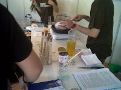
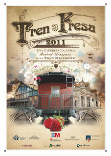

¡Hazte con el Bonoplanetario!
2011-06-03T13:33:00.000+02:00
Todavía tenemos Bonoplanetario disponibles. No os olvidéis de recoger el vuestro en CosmoCaixa.
Tenéis hasta el 6 de junio.
VERANO DE TEATRO - MUSICAL EN EL MUSEO DEL FERROCARRIL 2011
2011-05-30T08:22:00.006+02:00
Como en años anteriores el Museo del Ferrocarril va a realizar durante los meses de verano una serie de actividades destinadas a niños y niñas de entre 5 a 12 años.
Bajo el titulo Verano de Teatro - Musical en el Museo del Ferrocarril 2011, y a lo largo de una quincena durante los meses de julio y agosto, los niños y niñas participantes pondrán a prueba su capacidad creativa y sus conocimientos sobre la historia del ferrocarril de forma lúdica y divertida en el marco incomparable de la estación de Delicias, sede del Museo del Ferrocarril.
La escuela de artes integradas Tocanbalac, compuesta por un equipo de jóvenes pedagogos provenientes de diferentes disciplinas, como la música, la danza, el teatro y la plástica, ha diseñado este original programa de actividades cuyo objetivo principal es relacionar las artes escénicas y plásticas con el mundo ferroviario y su entorno.
De esta forma, los niños y niñas participantes, mediante talleres de música rítmica, educación vocal, música instrumental y movimiento coreográfico, concebirán el guión, compondrán la música e interpretaran una obra de teatro – musical cuyo titulo es El maquinista de Hamelin. El sonido del tren, la vida en las estaciones, o la experiencia de los maquinistas y viajeros, servirán de inspiración para este musical que se representará en el salón de actos del Museo.
Otra de las actividades programadas es la puesta en escena de una visita teatralizada por el Museo del Ferrocarril. Objetos históricos ferroviarios como son las maquinas de vapor, o las locomotoras diésel y eléctricas, junto con la propia estación de Delicias, contarán sus historias a través de las voces de nuestros jóvenes actores y actrices.
Finalmente en el taller de artes plásticas y manualidades desarrollaremos una actividad plástica en grupo: El Mural de las Delicias, donde esculpiremos de forma artística parte de las experiencias y situaciones vividas a lo largo de estos quince días relacionadas con la estación de Delicias y el tren. Este mural se expondrá en la Sala de Tracción para que puedan contemplarlo los visitantes del Museo.
Las actividades previstas se complementan con viajes en trenes de Cercanías y visitas a las instalaciones de la estación de Atocha o a Andén 0 (Metro de Madrid), entre otras.
En el pdf que acompaña a esta noticia se puede encontrar toda la información necesaria para inscribirse en el programa cultural ofrecido a los niños este verano por el Museo del Ferrocarril.
Mañana es el último día para visitar el Jardín Botánico
2011-05-29T15:58:00.015+02:00
Aún estás a tiempo de visitar gratis el Botánico con tu título de transporte en Metro; el próximo lunes 30 de mayo finaliza esta iniciativa, así que aprovecha el buen tiempo y ven a dar un agradable paseo en un ambiente tranquilo a la vez que te envuelves en el aroma de las plantas más sorprendentes y los árboles que difícilmente verás en la calle, como algunos de los ejemplares más hermosos entre los árboles singulares de la Comunidad de Madrid.
Cada visita al Jardín es diferente, como distintas son las especies que florecen en cada estación. En plena primavera no deberías perderte el colorido de los rododendros. Puedes conseguir unas fotos estupendas.
Para ayudarte a diseñar tu visita particular al Jardín, según tus propios intereses, la web del Botánico ofrece unos prácticos itinerarios auto-guiados, que te ayudarán a explorar sus 8 hectáreas de extensión y aprender, de paso, algunos de los aspectos más interesantes del mundo vegetal.
Estos itinerarios auto-guiados están disponibles en formato PDF para imprimir pero también se puede realizar una visita virtual.
Podrás escoger itinerarios que te llevarán a conocer los árboles singulares, las adaptaciones de las plantas, la evolución del reino vegetal, las plantas del Quijote, las plantas aromáticas o las plantas y las alergias. En el Jardín encontrarás los paneles informativos de cada uno de los itinerarios.
Las riquezas de los Museos de Metro de Madrid
2011-05-28T08:52:00.000+02:00
Algo característico del suburbano madrileño es que alberga algunas riquezas que permiten conocer al viajero un poco más la historia de nuestros antepasados.
Un ejemplo de esto es la segunda planta de la nueva estación de Ópera, que incluye un museo de 200 metros cuadrados donde los usuarios pueden contemplar los vestigios arqueológicos de los siglos XVI y XVII encontrados en ese mismo lugar y que formaban parte de la antigua Plazuela de los Caños del Peral (hoy Plaza de Isabel II). Se trata de la Fuente de los Caños del Peral, el Acueducto de Amaniel (que surtía de agua al Palacio Real) y otros elementos hidráulicos descubiertos durante las obras de remodelación de la estación, como la Alcantarilla del Arenal.
El Museo de la estación de Ópera es el mayor museo arqueológico creado en el suburbano madrileño, de cuyos restos pueden disfrutar los viajeros que pasan por la estación a través de enormes mamparas. Además, tienen la posibilidad de entrar en una sala dotada de una zona de audiovisuales que muestra la historia de los vestigios expuestos.
Por otro lado, la estación de Carpetana cuenta con uno de los yacimientos de restos paleontológicos más importantes de la Comunidad de Madrid, con valiosos hallazgos del mioceno en un Museo único para todos los públicos. En ella están expuestos un oso-lobo, una tortuga gigante, un jabalí y un mastodonte de hace más de 14 millones de años.
Un repaso por la historia del suburbano
Para cualquier usuario que quiera conocer un poco más de la historia del Metro, es imprescindible visitar la estación de Chamberí y la Nave de Motores de Pacífico.
Construida entre los años 1922 y 1923, la Nave de Motores empezó a funcionar en 1924. En su interior está expuesta actualmente toda la maquinaria que en su momento sirvió para generar y almacenar la energía con la que funcionaban los trenes de la época. Durante la Guerra Civil, gracias a toda esta maquinaria, la ciudad fue alumbrada a través de la compañía Unión Eléctrica Madrileña. Con el paso del tiempo, la Central, que en su día fue la más potente de España, dejó de funcionar y ya en 1987 fue clausurada. Tras las obras de reforma del arquitecto Carlos Puente, el edificio volvió a su aspecto original y ahora podemos apreciar junto a esta maquinaria, tres motores diesel usados en los inicios de Metro.
Otra posibilidad es la de visitar la estación “fantasma” de Chamberí, convertida desde 2008 en el museo-centro de interpretación de Metro. En ella, todos los visitantes viajarán a través del tiempo para situarse en un escenario de los años 60, donde todo el mobiliario de la época muestra un trocito de historia. Desde las taquillas hasta la publicidad en cerámica hacen de Chamberí un lugar especial para poder apreciar cómo era una estación.
QWERTY: La evolución de una especie tecnológica
2011-05-26T11:13:00.006+02:00
En el 2009, año de Darwin, se conmemoró un doble aniversario; la publicación en 1859 de On the Origin of Species by mean of natural selection… y el nacimiento de su autor Charles Robert Darwin (1809-1882).
Con más de 30 máquinas de escribir, máquinas de calcular, ordenadores, diversos esqueletos de animales… el museo ha querido unirse a esta celebración con la exposición QWERTY: La evolución de una especie tecnológica. En ella, descubriremos como la vieja máquina de escribir ‘evolucionó’ hacia el ordenador, incorporando el teclado QWERTY a los nuevos aparatos, generando así un nuevo reino de máquinas, de manera similar a como los reptiles derivaron en las aves. Viejas estructuras para nuevos usos, adaptados al nuevo perfil requerido por la sociedad. Vestigios de los antiguos teclados se encuentran aún en los mandos de las consolas de videojuego: teclados especializados en los que, a través de símbolos iconográficos y flechas de dirección, las teclas asumen funciones complejas que superan sus antiguos usos.
La pieza del mes
2011-05-25T10:05:00.014+02:00
El MUNCYT conserva más de 15000 objetos entre instrumentos científicos, aparatos tecnológicos, vehículos de transporte, máquinas herramienta y herramientas industriales. Desde el siglo XVI hasta la actualidad, la mayoría de las piezas proceden de colegios y centros de enseñanza secundaria, universidades e instituciones científicas, colecciones particulares y donaciones.
El museo elige cada mes una pieza reprentativa siendo la de este mes La Marmita de Papín
Este tipo de artefacto consigue elevar la temperatura de ebullición del agua u otros líquidos varios grados, haciendo más rápida la cocción de alimentos o permitiendo disolver sustancias generalmente insolubles en agua. La pieza que se muestra procede de la Facultad de Ciencias Físicas de la Universidad Complutense de Madrid y se encuentra en el departamento de física concretamente en la Sección de Calor.
Nos vemos en el Real Jadín Botánico
2011-05-23T09:19:00.003+02:00
Si aún no habéis tenido tiempo de visitar el Jardín botánico, recordad que hoy 23 de mayo y el próximo día 30 aun lo podéis hacer de manera gratuita presentando el billete de metro o el abono de transportes.
Recuerda que los invernaderos y las exposiciones del Pabellón Villanueva cierran media hora antes de la hora de cierre del Jardín.
Busca el enigma oculto en las estaciones de Atocha y Atocha Renfe y escribe la respuesta en tu pasaporte.
¡Buenos días!
2011-05-22T08:16:00.003+02:00
Buenos días a todos, recordaros que hoy también podeis visitar el Museo Antropológico pero sólo hasta las 15h.
La historia del Museo Antropológico
2011-05-21T09:14:00.000+02:00
El Museo Nacional de Antropología, es el primer museo de carácter antropológico que se crea en España. Como museo etnológico que es, ofrece al público visitante una visión global de la cultura de diferentes pueblos del mundo y asimismo establece las semejanzas y diferencias culturales que les unen o separan para poner de manifiesto la diversidad cultural. Las colecciones que a lo largo del tiempo se han ido incorporando y constituyendo sus fondos son muestras de la cultura material de diferentes pueblos de África, América, Asia, Europa y Oceanía, así como también cuenta con importantes fondos de Antropología física.
El 29 de abril de 1.875 el rey Alfonso XII inaugura el "Museo Anatómico", aunque popularmente se le conocerá como Museo Antropológico. Su fundación se debió a la iniciativa personal del médico segoviano Pedro González Velasco, que invirtió todos sus ahorros en la construcción del edificio, cuyo arquitecto fue el Marqués de Cubas. En aquel momento las colecciones estaban formadas por objetos pertenecientes a los tres "reinos" de la naturaleza –mineral, vegetal y animal-, muestras de antropología física y teratología, así como antigüedades y objetos etnográficos, por lo que podía considerarse como un típico "gabinete de curiosidades". A su muerte el Estado compra el edificio y todas sus colecciones.
En 1.890 el Museo de Ciencias Naturales toma la decisión de utilizar el antiguo museo del Dr. Velasco como una ampliación del suyo, y en 1.895 traslada su Sección de Antropología, Etnología y Prehistoria, que formó con parte de las colecciones del Dr. Velasco, con parte de las colecciones traídas por diferentes expediciones y viajes científicos llevados a cabo en los últimos años del siglo XIX, y con las propias colecciones que de este tipo tenía el Museo de Ciencias Naturales.
En 1.910, por medio de un Real Decreto, esta sección del Museo de Ciencias Naturales, se convierte en el Museo Nacional de Antropología, Etnografía y Prehistoria, dependiendo ya del Estado. En estos años fue un centro relevante de la antropología del país, y contaba ya con una importante biblioteca y con algunos laboratorios, en los que se impartían las clases prácticas de la cátedra de Antropología de la Universidad.
En 1.940, por una Orden Ministerial, va a tener lugar la constitución del Museo Nacional de Etnología. Esta creación no significaba un nuevo edificio ni unas nuevas colecciones, sino simplemente una concepción diferente en la ordenación de éstas. Se va a dar mayor importancia a la exposición de las colecciones etnográficas, relegándose a un segundo plano las de antropología física, dependiendo desde ese momento del recién creado Consejo Superior de Investigaciones Científicas. En 1.962 pasará a formar parte de la Dirección General de Bellas Artes, declarándose entonces Monumento Histórico-Artístico el edificio y las colecciones.
El Real Decreto 684/1993 de 7 de mayo creó el Museo Nacional de Antropología –con lo cual recuperaba su antiguo nombre-, al fusionar el Museo Nacional de Etnología y el Museo del Pueblo Español. Esta unión fue más administrativa que real, puesto que ambas instituciones siguieron funcionando de manera independiente.
La separación definitiva se produjo en 2004, con dos Reales Decretos consecutivos (119/2004 y 120/2004 de 23 de enero). El primero reorganizaba el Museo Nacional de Antropología, y el segundo daba lugar al nacimiento del Museo del Traje CIPE, al que se asignaron las colecciones del antiguo Museo del Pueblo Español.
En 2004 el Museo Nacional de Antropología inició la renovación de la exposición permanente, primero en la sala de África, y en 2005 en la de América y en la de Antropología Física. La renovación actual responde a un nuevo discurso expositivo, más acorde con los criterios científicos actuales, tanto museológicos como antropológicos. De este modo, el anterior discurso cronológico y geográfico ha sido sustituido por uno temático, que agrupa los fondos en áreas tales como indumentaria y adorno, música y actividades lúdicas, creencias, vivienda y ajuar doméstico, precedidas de una introducción y de unos breves apuntes geográficos e históricos. La última fase de la renovación acabó en octubre de 2008, cuando se inauguró la nueva sala de Asia (Filipinas y Religiones Orientales), situada en la planta baja del edificio.
Concierto de la Joven Orquesta Sinfónica de Arturo Soria en el Museo del Ferrocarril
2011-05-19T21:16:00.000+02:00
El próximo sábado, 21 de mayo, a las 12.00 horas, la Joven Orquesta Sinfónica del Conservatorio Profesional de Música Arturo Soria (JOSAS) ofrecerá un concierto en la Sala de Tracción del Museo del Ferrocarril. La duración aproximada del recital será de 45 minutos y en el programa están incluidas la obertura de Egmont, de Ludwig van Beethoven; las “Variaciones Enigma” de Nimrod, de Edward Elgar; una “Humoresque” de Antonín Dvorák; el Preludio de El Bateo, de Federico Chueca; la Danza final (malambo) del ballet Estancia, de Alberto Ginastera; y la Danza nº 1 de La vida breve, de Manuel de Falla.
Esta formación musical está dirigida por José Carlos Martín Calvo, que ha colaborado con las más prestigiosas orquestas españolas, como la RTVE o la Orquesta de Cámara Reina Sofía y las austríacas Proarte, Residenz y Mozart. La JOSAS es el resultado de una activa labor pedagógica por parte del Conservatorio Arturo Soria, que ha incentivado la convivencia e integración de los jóvenes a través de la música. La Joven Orquesta sirve de primer trampolín para los solistas, que tienen edades comprendidas entre los 14 y los 19 años, y aunque cuenta con una corta trayectoria (se creó en el curso 2006-2007), ya ha actuado en escenarios de relevancia, como el Auditorio de Madrid.
“El Bosque Animado”. Campamento de verano para niños y niñas en el Real Jardín Botánico con la colaboración del Museo Nacional de Antropología.
2011-05-19T07:27:00.001+02:00
Por segundo año consecutivo el Real Jardín Botánico y el Museo Nacional de Antropología colaboran para ofrecer un campamento de verano durante la última semana de junio y las cuatro semanas de julio.
Este año nos centraremos en el tema de los bosques ya que 2011 ha sido declarado como el Año Internacional de los Bosques, unos maravillosos entornos naturales que siempre han ofrecido cobijo y recursos, pero que se están viendo mermados por los abusos y la acción destructora del ser humano.
Gracias a la colaboración entre las dos instituciones, los participantes tendrán una visión desde el punto de vista naturalista y biológico en el Jardín y un punto de vista cultural y antropológico en el Museo, ya que el bosque no es sólo un entorno natural sino también un lugar sobre el que el ser humano ha actuado.
Las reservas para participar en el campamento comienzan el 3 de mayo en el teléfono 914200438 (horario de 9,30 a 14h) o correo electrónico: culturacientifica@rjb.csic.es. Las fechas que ofrecemos son del 27 de junio al 1 de julio, del 4 al 8 de julio, del 11 al 15 de julio, del 18 al 22 de julio y del 25 al 29 de julio y el horario 9 a 14h. Durante la semana que dura el campamento se desarrollan actividades cuatro días en el Jardín y un día en el Museo.
¡No te andes por las ramas y apúntate!
Metro de Madrid ahorró casi un 10% en gasto energético en 2010
2011-05-18T10:46:00.014+02:00
Viajar en Metro en lugar de en coche supone emitir cuatro veces menos de CO2. Las políticas de eficiencia energética de la compañía han contribuido decisivamente a este ahorro. El gasto energético pasó de 74,4 millones en 2009 a 67,6 millones en 2010
Metro de Madrid ahorró en 2010 casi un 10% en su factura energética, pasando de un gasto en 2009 de 74.443.803 euros a los 67.626.111,84 del pasado año. La política de ahorro y eficiencia energética de la compañía, así como la adjudicación del contrato de suministro eléctrico realizada a través del procedimiento de subasta electrónica ha sido determinante para conseguir este ahorro.
Las políticas de ahorro y eficiencia energética llevadas a cabo por Metro de Madrid comprenden la puesta en marcha de numerosos proyectos de I+D dirigidos a reducir el consumo de energía. Entre ellos, destaca el aprovechamiento de la fuerza de frenada para el rranque de los trenes, que permite que Metro ahorre una cantidad de energía equivalente al consumo de toda la Línea 2 durante un año. Estos trenes se caracterizan por incorporar sistemas automáticos que ajustan informáticamente su velocidad y permiten aprovechar la energía generada en la frenada de los mismos para su reincorporación a la red.
Metro de Madrid además ha llevado la mejora continua de sus instalaciones y de los sistemas de funcionamiento diario orientados a optimizar la eficiencia energética. Innovaciones tan importantes como el aprovechamiento de la luz solar para iluminar los accesos durante gran parte del día y la colocación de cristaleras en las bocas de metro que permiten su penetración al interior de las instalaciones, han permitido la reducción de la emisión de CO2. También las células fotoeléctricas que detectan el grado de luminancia necesario para regular el sistema de encendido o apagado de la iluminación. Todas las luminarias de las estaciones son de última generación, lo que garantiza una mayor duración y menor consumo energético.
También se ha automatizado el funcionamiento de las escaleras mecánicas, dotándolas de un dispositivo para ir con mayor lentitud cuando ningún pasajero las está utilizando y consecuentemente conseguir mayor eficiencia.
La ampliación también cuenta
La ampliación que la red de Metro de Madrid ha experimentado en los últimos años ha sido otro de los grandes hitos como medida de ahorro energético en la Comunidad de Madrid, al evitar que por las calles de la región circulen más de 385.000 coches adicionales a los que ya circulan al día, lo que implica un considerable ahorro en la emisión de más de 2 millones de toneladas de CO2 a la atmósfera respecto a las que hubiera habido si los ciudadanos hubieran tenido que moverse en coche en lugar de en Metro.
Los nuevos kilómetros han absorbido un incremento del 7,7% del tráfico de vehículos en superficie, o lo que es lo mismo, la expansión del suburbano ha absorbido la demanda de movilidad equivalente a casi 9.100 millones de kilómetros recorridos por vehículos privados en superficie.
También menor consumo de agua
Para minimizar el consumo del agua, se ha modificado el sistema de limpieza en trenes y estaciones logrando un gran ahorro. De los ocho túneles de lavado que existen actualmente, seis están dotados de recicladoras que permiten recuperar hasta el 80% de la cantidad de agua consumida.
Gracias a estos avances tecnológicos, entre otros, en los que Metro de Madrid está trabajando se consigue que la emisión de gases de efecto invernadero que repercuten en el calentamiento global y el cambio climático se reduzca considerablemente, en una labor necesaria para que España cumpla los límites exigidos en el Protocolo de Kyoto.
De esta forma, el transporte ferroviario tiene unas emisiones por pasajero transportado muy bajas. Al transportar un gran número de personas, Metro consigue unos niveles de consumo energético y por tanto de emisiones por cada viajero-km significativamente bajo con respecto al vehículo privado. De hecho, gracias a las medidas antes descritas, y añadiendo el hecho de transportar un elevado número de viajeros se consigue minimizar sus emisiones de CO2 en los periodos punta a menos de 40gr/v-km.
Como ejemplo, el gasto energético al desplazarse en este medio de transporte público –con un aforo de 218 viajeros-, supone sólo el 6,5% de la energía que gastarían los 174 coches necesarios para transportar al mismo número de personas. Viajar en Metro en lugar de en coche supone emitir cuatro veces menos de CO2.
Hablemos de drogas
2011-05-17T09:30:00.009+02:00
¿Estamos realmente informados de los efectos de las drogas?, ¿cómo se convierte una persona en adicta?, ¿cuál es el proceso de la adicción?, ¿cómo afectan las drogas al cerebro, a los órganos y a nuestras conductas?
A estas y otras preguntas encontrarás respuesta en la exposición "Hablemos de drogas". En un simulador de juego de la ruleta rusa, conocerás las probabilidades de caer en la adicción a cualquier tipo de droga. Además, podrás comprobar de qué manera afecta el consumo de drogas no solo psicológicamente, sino también físicamente. Una máscara de teatro sonriendo deja de tener esta expresión cuando toma drogas y, a medida que aumenta la dosis, se va convirtiendo en un rostro triste y demacrado.
Conociendo el impacto que la adicción a las drogas ejerce sobre nuestro cerebro, ¿será posible erradicar su consumo, el abuso y los problemas personales y sociales derivados de las adicciones?
"Hablemos de drogas" es una exposición que invita a reflexionar sobre las drogas, su impacto social, los efectos que provocan en la salud y la importancia de la prevención. La visita a la exposición permite desarrollar argumentos propios desde el conocimiento, tener una actitud crítica ante las drogas y tomar decisiones con responsabilidad.
La exposición y el programa "Hablemos de drogas" cuentan con el reconocimiento de la European Action on Drugs (Comisión Europea)
CosmoCaixa
Pintor Velázquez, s/n
Hasta el 26 de junio
Precio incluido en la entrada al museo
Más de 7.000 personas han recorrido la “Ruta de los Museos” en Metro
2011-05-30T13:34:00.000+02:00
Aumentan las visitas a los centros participantes respecto al año pasado. Con la visita al Real Jardín Botánico, la Ruta pone hoy su broche final a su segunda edición. Los participantes aún pueden optar a un bonoplanetario y a lotes de libros científicos si han resuelto el enigma en el “pasaporte de la ciencia”. Cosmocaixa o el Museo del Ferrocarril han sido algunos de los centros que han podido visitarse gratuitamente
Más de 7.000 personas han recorrido la “Ruta de los Museos” durante el mes de mayo, batiendo un récord de participación en esta iniciativa que ha propuesto recorrer algunos de los museos más importantes de la capital con una sola condición: que los trayectos del recorrido se realizaran en Metro.
Con la “Ruta de los museos” se ha podido acceder a diferentes museos de manera gratuita como el Real Jardín Botánico, el Museo Geominero, el Museo Nacional de Ciencias Naturales, el Museo Nacional de Ciencia y Tecnología, el Museo de Antropología, el Museo del Ferrocarril, y Cosmocaixa con solo presentar el billete de Metro. Cada museo ha tenido unos días específicos para visitarlo y en algunos se ha celebrado alguna actividad adicional o se ha hecho entrega de un regalo a los visitantes.
El enigma de la “Ruta de los Museos”
Además, Metro ha propuesto la resolución del enigma de la “Ruta de los Museos” a través del “Pasaporte de la Ciencia”. Los visitantes se han podido descargar el pasaporte a través de este blog, habilitado al efecto y han ido sellando según acudían a los museos. De este modo, los participantes han optado a diferentes premios buscando el enigma que aparecía en la estación de Metro cercana a cada Museo participante en la iniciativa y contestando al enigma en el pasaporte.
Todo aquel que haya visitado al menos cinco museos y que posea el “pasaporte de la ciencia” correctamente sellado y contestado aún está a tiempo para hacer entrega del mismo en Cosmocaixa. El día 6 de junio finaliza el plazo de entrega y los 200 primeros recibirán gratis un bonoplanetario (entrada gratuita al planetario digital de Cosmocaixa). Por otro lado, todos los que hayan entregado el pasaporte con al menos 5 respuestas correctas entrarán en el sorteo de 10 kits de libros científicos.
El año pasado más de 6.000 personas participaron en el concurso y entregaron su pasaporte cumplimentado. Durante ese mes, algunos museos como el Geominero aumentaron sus visitas de manera espectacular llegando a superar un 200% su demanda.
No es la primera vez que Metro de Madrid tiende la mano a entidades o espacios culturales, ya que participa habitualmente en la Semana de la Ciencia, la Semana de la Arquitectura, la Noche en Blanco, la Noche de los libros y otros muchos actos y exposiciones que se desarrollan en la capital.
III Finde científico
2011-05-29T21:41:00.001+02:00
El III Finde científico celebrado durante este fin de semana en el MUNCYT ha sido todo un éxito a pesar del calor reinante en la capital.
Os enseñamos algunas fotos con los experimentos que los chicos participantes estuvieron haciendo en los stands.
|
Durante todo el día los participantes realizaron
experimentos delante del público asistente |
|  |
| La química en la cocina |
|
| La FECYT también estuvo presente |
>>>>> |
III Finde científico. La fiesta de la ciencia en Madrid
2011-05-28T09:18:00.004+02:00
Hoy y mañana tenéis la posibilidad de visitar el Museo Nacional de Ciencia y Tecnología de Madrid dentro del programa La Ruta de los Museos, pero además podreis asistir al III Finde Científico que organizan en la explanada.
Como público podréis visitar hasta 36 stands diferentes con más de 300 estudiantes de colegios e institutos y 70 profesores, científicos y demás técnicos y profesionales de museos, que nos acercarán a través de sencillos talleres y recursos educativos a los misterios de la química, la física, la biología, la tecnología, los bosques, los océanos… un sinfín de experiencias para aprender y disfrutar de esta Fiesta de la Ciencia en la calle.
Centros docentes
1. British Council School (Pozuelo de Alarcón)
2. C. C. Beata Filipina
3. C. C. Bérriz (Las Rozas)
4. C. C. Cristo Rey
5. Colegio El Valle
6. Colegio Internacional SEK-Ciudalcampo (S.S. de los Reyes)
7. Colegio La Inmaculada (Guadarrama)
8. Colegio Los Peñascales (Las Rozas)
9. Colegio Los Tilos
10. Cooperativa de Enseñanza José Ramón Otero S.C.M
11. Scuola Statale Italiana di Madrid
12. I.E.S. Alonso de Avellaneda (Alcalá de Henares)
13. I.E.S. Manuel de Falla (Coslada)
14. I.E.S. Alpajés (Aranjuez)
15. I.E.S. Carlos III
16. I.E.S. Carmen Martín Gaite (Moralzarzal)
17. I.E.S. Diego Velázquez (Torrelodones)
18. I.E.S. El Espinillo
19. I.E.S. Federico García Lorca (Las Rozas)
20. I.E.S. Iturralde
21. I.E.S. José Hierro (Getafe)
22. I.E.S. La Dehesilla (Cercedilla)
23. I.E.S. Juan de la Cierva
24. I.E.S. Miguel Catalán (Coslada) & IES Satafi (Getafe)
25. I.E.S. Sierra de Guadarrama (Soto del Real)
26. I.E.S. Victoria Kent (Torrejón de Ardoz)
27. I.E.S. Guadarrama (Guadarrama)
Museos e Instituciones
28. Real Jardín Botánico de Madrid. CSIC.
29. Museo Nacional de Ciencias Naturales. CSIC.
30 y 31. Museo Geominero
32. CosmoCaixa Madrid
33. Centro de Astrobiología. CSIC-INTA.
34. Fundación de Apoyo al Museo Nacional de Ciencia y Tecnología
35. CSIC. Instituto Eduardo Torroja de Ciencias de la Construcción.
36. FECYT
Y también se contará con la participación de Genoma España y la Universidad Carlos III de Madrid.
Encuentra la respuesta
2011-05-27T09:23:00.000+02:00
Si aún no has visitado el Museo Nacional de Ciencias Naturales tienes hasta las 18.00 h. para disfrutar de este magnífico museo.
Recordar que tenéis que buscar el enigma dentro. ¿Cuál es el nombre del dinosaurio que llegó al Museo Nacional de Ciencias Naturales a principios del siglo XX?
¿Ya sabéis la respuesta?
Si no es así os facilitamos una pista, subir a la primera planta y visitar la exposición Minerales, Fósiles y Evolución Humana.
SE INICIA LA CAMPAÑA DEL TREN DE LA FRESA
2011-05-26T10:07:00.010+02:00

El próximo sábado, 28 de mayo, comienza la campaña de 2011 del Tren de la Fresa. Este tren histórico, que recorre la línea que une Madrid con Aranjuez, cumple ahora 27 años y se ha convertido en todo un clásico en nuestra Comunidad, en un interesante recorrido turístico, cultural y de ocio. Su puesta en marcha es una iniciativa conjunta del Museo del Ferrocarril, la Comunidad de Madrid, el Ayuntamiento de Aranjuez y Patrimonio Nacional.
La presente campaña tendrá una primera fase que, con inicio el 28 de mayo, finalizará el domingo 26 de junio. La segunda fase dará comienzo el 10 de septiembre y se extenderá hasta el 23 de octubre, con lo que se ofrecerá un total de veinticuatro viajes que se realizarán los sábados y domingos.
Además del recorrido en un tren histórico, formado por cuatro coches “Costa” construidos en la década de 1920 y adquiridos por la compañía MZA para sus servicios de Cercanías, los viajeros podrán degustar los típicos fresones a bordo mientras disfrutan de una entretenida animación teatral. Al llegar a Aranjuez les espera una magnífica jornada en esta localidad, con visita al Palacio Real y al Museo de Falúas. El billete para el Tren de la Fresa incluye también diversos descuentos, por ejemplo en el Museo Taurino y en diversas actividades de ocio.
¡No te lo pienses más y súbete al tren!
INFORMACIÓN
DÍAS DE CIRCULACIÓN DEL TREN
Mayo: 28 y 29
Junio: 4, 5, 11, 12, 18, 19, 25 y 26
Septiembre: 10, 11, 17, 18, 24 y 25
Octubre: 1, 2, 8, 9, 15, 16, 22 y 23
HORARIOS
IDA
Salida del Museo del Ferrocarril 10.00 h.
Llegada a la Estación de Aranjuez 10.50 h.
REGRESO
Salida de la Estación de Aranjuez 18.25 h.
Llegada al Museo del Ferrocarril 19.15 h.
(Museo del Ferrocarril: Paseo de las Delicias, 61 – 28045 Madrid)
TARIFAS
Adultos 28,00 euros
Niños (de 4 a 12 años) 20,00 euros
Los menores de 4 años viajan gratis si no ocupan asiento.
ESTOS PRECIOS INCLUYEN:
- Viaje de ida y vuelta en un tren histórico.
- Degustación de fresón ofrecido por azafatas vestidas de época.
- Animación teatral a bordo del tren.
- Traslados de la estación de Aranjuez a la zona monumental en autocar climatizado.
- Visitas al Palacio Real (guiada) y Museo de Falúas (libre).
- Descuento del 50% en el Museo Taurino (1,5 euros)
- Para otras alternativas: www.museodelferrocarril.org
COMPRA DE BILLETES
Los billetes pueden adquirirse con antelación exclusivamente en:
- Estaciones de ferrocarril que dispongan de venta anticipada.
- Agencias de viajes.
INFORMACIÓN Tel.: 902 228 822
http://www.museodelferrocarril.org/
http://www.renfe.es/
http://www.aranjuez.es/
Loop Quantum Gravity
2011-05-24T11:25:00.012+02:00
¿Es nuestro Universo una continuación de un cosmos anterior?
Esta es la conclusión a la que parece llegar la teoría LQG, que intenta reconciliar la teoría de la relatividad con la teoría cuántica para ofrecer una explicación unificada del Universo. Superinflación, big bounce, variables de Ashtekar, universos que colapsan bajo la fuerza de la gravedad solo para volver a expandirse breves instantes después... Las nuevas teorías que intentan explicar el Universo en su conjunto llenan la cosmología de nuevos y atractivos conceptos.
Mañana 25 de mayo a las 18:30h contaremos con tres de los investigadores pioneros en la gestación de la LQG y de las nuevas concepciones a las que ha dado lugar. Presentarán sus últimos avances y discutirán con nuestro público las implicaciones que pueden tener sus trabajos en el modo en que comprendemos el Universo en el que vivimos.
La teoría de la gravedad cuántica de lazos (Loop Quantum Gravity, LQG) intenta reconciliar las teorías de la mecánica cuántica y de la relatividad general. Es una teoría cuántica sobre el espacio-tiempo que se ha convertido en uno de los candidatos más firmes para dar una explicación (cuántica) del campo gravitatorio. Hoy en día atrae la atención de un número creciente de científicos, además de cautivar al público y a los medios de comunicación. Esta descripción del campo gravitatorio utiliza variables diferentes a las empleadas tradicionalmente en la teoría de la relatividad general. Son las llamadas variables de Ashtekar, introducidas por el profesor Abhay Ashtekar en 1986, y que en 2011 cumplen veinticinco años. Esta descripción permite abordar el tratamiento cuántico de la gravedad sin necesidad de considerar cómo perturba el espacio-tiempo, evitando así los problemas de los enfoques convencionales.
La gravedad cuántica de lazos ha proporcionado un avance fundamental en nuestra comprensión y descripción de los fenómenos cuánticos gravitatorios y de la constitución microscópica del espacio y el tiempo. Además, son destacables los éxitos de sus aplicaciones, especialmente sus consecuencias en cosmología y en física de agujeros negros. Así, por ejemplo, se ha conseguido mostrar que los efectos de la geometría cuántica resuelven la singularidad inicial de la cosmología -el Big Bang-, que queda reemplazada por un Big Bounce (gran rebote) en el que el Universo conecta con una fase anterior de su evolución. También se ha obtenido una descripción geométrica que explica el comportamiento termodinámico de los agujeros negros.
Participantes
Abhay Ashtekar, director del Instituto para Gravitación y el Cosmos, Cátedra Eberly de Física, Penn State University, EE. UU.
Carlo Rovelli, University of Aix-Marseille, Francia
Lee Smolin, Perimeter Institute for Theoretical Physics, Waterloo, Canadá
Moderador
Benjamín Montesinos, investigador del CSIC- CAB
Una pieza curiosa: La lámpara de esteatita
2011-05-22T11:42:00.001+02:00
El grupo étnico inuit, que vive en las tundras del norte de Canadá, Alaska y en Groenlandia, ha utilizado tradicionalmente la lámpara de esteatita como recipiente para mantener constantemente encendido el imprescindible fuego. La lámpara está fabricada en un tipo de piedra llamada esteatita y tiene forma de media luna; en ella vierten grasa de foca derretida como combustible y hebras de musgo seco que sirven como mecha. El fuego de la lámpara sirve a los inuit para cocinar, calentarse e iluminarse y en un clima tan frío, resulta imprescindible que esté encendido de manera permanente.
Busca el enigma
2011-05-21T11:43:00.003+02:00
Como habéis podido ver en las estaciones de metro el enigma que tenéis que buscar en el Museo Antropológico es el siguiente:
El jugo de la mandioca amarga es venenoso, debido a una sustancia que contiene ¿Sabes como se llama esta sustancia?
Os damos una pista, "Viaja hasta América"
La Ruta de los Museo llega al Museo Nacional de Antropología
2011-05-20T09:36:00.013+02:00
Los días 21 y 22 de mayo la Ruta de los Museos se traslada al Museo Nacional de Antropología. Los visitantes que se acerquen al Museo durante estos dos días con un título de transporte válido que acredite que han venido en Metro podrán entrar gratis y acceder a los talleres interactivos sobre el origen de las matemáticas.
Estos talleres tratan de mostrar que nuestro conocimiento actual en matemáticas no se ha creado instantáneamente, ni proviene de un solo foco cultural, sino que ha sido producto de un lento y constante desarrollo, dinamizado por numerosas culturas y civilizaciones de todo tiempo y lugar y que por supuesto continúa hoy en día.
Queremos mostraros el lejano origen de las matemáticas y que procedimientos tan habituales en nuestras escuelas como las tablas de multiplicar ya se habían creado hace 4000 años y que otros como el “cero” no estuvieron presentes en todas las culturas.
Os invitamos a investigar sobre el origen de los números y sobre la necesidad de contar, registrar y computar que han tenido las sociedades del pasado, desde las más sencillas hasta las grandes civilizaciones.
El horario de los talleres es:
-Sábado 21 de 10:00 a 14:30h. y de 16:30 a 19h.
-Domingo 22: de 10:00 a 15:00h.
Para entrar en la actividad no es necesaria reserva, se puede acceder en cualquier momento durante estos horario, siempre que el aforo no esté completo. Los talleres son para todos los públicos.
¡Os esperamos!
Nanocam, viaje a la biodivesidad
2011-05-19T10:38:00.002+02:00
El Planetario Digital de CosmoCaixa, dedicado hasta la fecha exclusivamente a contenidos de astronomía, pasa a ampliar su campo de divulgación, consiguiendo mostrar contenidos de biología de una forma muy atractiva y sorprendente.
Con NanoCam, viaje a la biodiversidad, CosmoCaixa Madrid ofrece un punto de vista único, sugerente, didáctico y divertido de acercarnos a los seres vivos como nunca antes los habíamos visto. Se trata de una invitación a reflexionar sobre qué es la vida.
Dirigido por Roberto Girón y producido por El Exilio en colaboración con Educando, educación y comunicación ambiental, más allá de ser una idea innovadora por la manera de mostrar los contenidos, presenta un desarrollo de los mismos impecable y cuidado, tanto en los aspectos científicos como
técnicos.
El programa pretende fomentar entre los jóvenes el desarrollo la vocación científica, su espíritu investigador y el respeto hacia la naturaleza a través del conocimiento, de una forma lúdica y divertida, de la diversidad biológica, presente en cualquier rincón de nuestro planeta, por pequeño e inhóspito que sea.
Los contenidos de Nanocam, viaje a la biodiversidad están adaptados a los contenidos curriculares del último ciclo de Educación Primaria y toda la Educación Secundaria. Además, gracias a las imágenes impactantes y de alta calidad es un programa que sorprende tanto a los más pequeños como a los
adultos.
A partir de fotografías de microscopio electrónico de barrido se modelaron todas las estructuras y organismos que aparecen. Se ha utilizado un software que emula el proceso de modelado con arcilla, lo que aporta una estética muy orgánica, como si fueran pequeñas esculturas en movimiento gracias a las últimas técnicas y software de animación.
Los músicos Pablo Cebrián y Julio Tejera han sido los encargados de realizar la banda sonora original que acompaña al visitante en cada uno de los reinos. Una música que emociona y le sumerge en la biodiversidad de nuestro planeta.
Cada reino tiene una música propia, que nos introduce en él y nos transporta hasta los ambientes donde viven esos seres vivos, con momentos de tensión creciente y momentos más relajados que nos transmiten sentimientos de paz y armonía.
Un planetario, dos chavales, imágenes de microscopio electrónico y la última tecnología en animación 3D invitan a un placentero paseo por cada reino de los seres vivos. Descubren sus características, su importancia en los ecosistemas, su valor para el ser humano y la belleza intrínseca a cada ser vivos.
Sus protagonistas son estudiantes que están buscando información en Internetre Biodiversidad para realizar un trabajo de clase cuando descubren Nanocam y, sin saber cómo, empiezan a manejar unas microcámaras
repartidas por diferentes lugares del planeta. Con cada descubrimiento se van emocionando y van comprendiendo la importancia que tienen todos y a cada uno de los seres vivos de nuestro planeta por pequeños a insignificantes que parezcan.
Durante el viaje a cada uno de los reinos, continuamente va apareciendo una pantalla con información, animaciones y fotografías para complementar las explicaciones de la nanovoz.
Museo y memoria
2011-05-18T13:55:00.005+02:00
Cada año desde 1977, se celebra en el mundo entero el Día Internacional de los Museos alrededor del 18 de mayo. De América a Oceanía pasando por Europa, Asia y África, el Día Internacional de los Museos es la ocasión para concienciar al público en general sobre el papel de los museos en el desarrollo de la sociedad.
El tema para el Día Internacional de los Museos 2011 es Museo y Memoria. Los museos guardan la memoria y cuentan historias. Conservan en sus colecciones objetos fundamentales para la memoria de las comunidades en las que vivimos. Tales objetos son la expresión de nuestros patrimonios natural y cultural. Muchos de ellos son frágiles, varios están en peligro, y todos necesitan un cuidado y una conservación especiales. El Día Internacional de los Museos 2011 será la ocasión de descubrir y redescubrir las memorias individual y colectiva.
Durante este día muchos museos tienen el acceso gratuito.
Mi primera vez en el museo en el Antropológico
2011-05-18T09:13:00.000+02:00
Una cámara y un recuerdo es todo lo que necesitamos para registrar lo que queda en la memoria de nuestros visitantes sobre su primera vez en un museo. En esta actividad el público puede acudir al Museo y grabarse en vídeo explicando como fue su primera visita a un museo y qué recuerdo tiene de ella. Con el vídeo resultante y junto con los vídeos recogidos en los demás Museos Estatales, se realizará un documental sobre la “primera vez” de nuestros visitantes en los Museos.
Del 17 al 20 de mayo. Horario para acudir al Museo Nacional de Antropología y realizar la grabación:
-Miércoles 18 de mayo: 10:00-14:00h. y de 17:00-19:00h.
-Martes 17, jueves 19 y viernes 20: 10:00-14:00h.